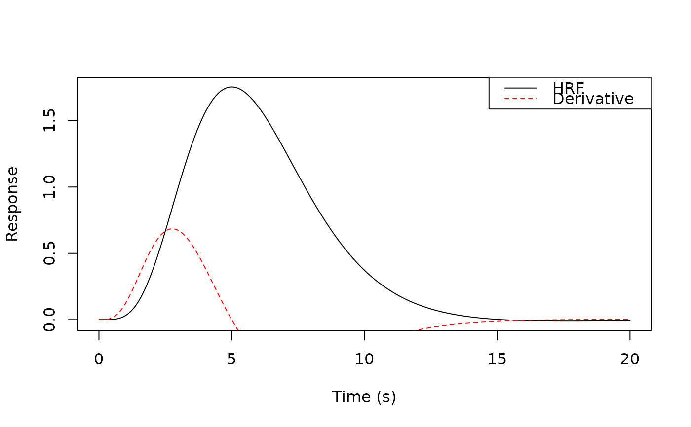

Calculates the derivative of a Hemodynamic Response Function (HRF) at specified time points. This is useful for:
Understanding HRF dynamics and rate of change
Creating temporal derivative regressors for fMRI models
Analyzing HRF shape characteristics
Implementing advanced HRF basis sets
Value
Numeric vector or matrix of derivative values at the specified time points. For multi-basis HRFs, returns a matrix with one column per basis function.
Details
The derivative computation method depends on the HRF type:
Analytic derivatives are used when available (e.g., SPMG1, SPMG2, SPMG3)
Numeric finite-difference approximation is used as fallback
The default implementation uses numDeriv::grad for numerical
differentiation when analytic derivatives are not available.
See also
[evaluate()], [HRF_objects], [numDeriv::grad()]
Other hrf:
HRF_objects,
penalty_matrix()
Examples
# Compute derivative of SPM canonical HRF
t <- seq(0, 20, by = 0.1)
hrf_deriv <- deriv(HRF_SPMG1, t)
# Plot HRF and its derivative
hrf_vals <- evaluate(HRF_SPMG1, t)
plot(t, hrf_vals, type = "l", col = "black",
ylab = "Response", xlab = "Time (s)")
lines(t, hrf_deriv, col = "red", lty = 2)
legend("topright", c("HRF", "Derivative"),
col = c("black", "red"), lty = c(1, 2))

# For multi-basis HRFs, returns matrix
deriv_matrix <- deriv(HRF_SPMG3, t)
# Returns derivatives for all 3 basis functions